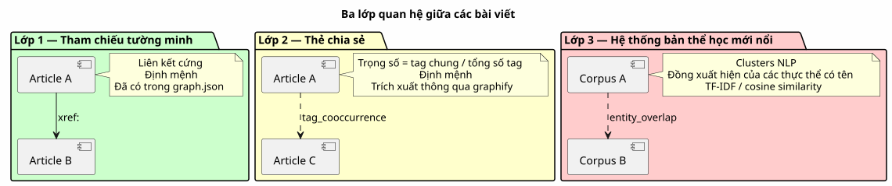
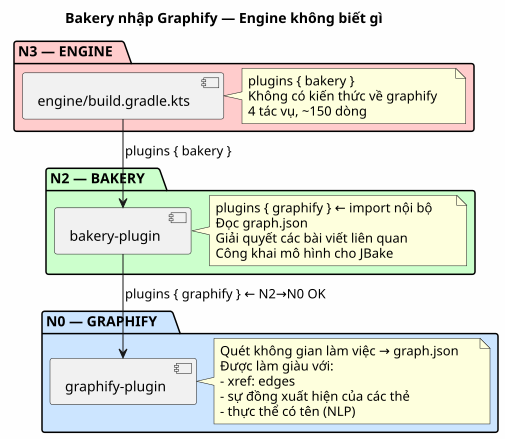
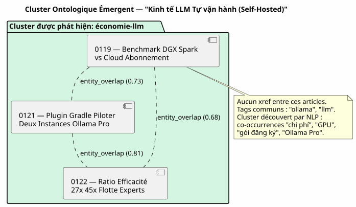

Knowledge Graph với vai trò là công cụ đề xuất: cách tôi đã loại bỏ các "bài viết liên quan" theo trình tự thời gian
Đăng ngày 12 May 2026
- Khung cảnh: Thứ Ba ngày 12 tháng 5, 17h30
- Chẩn đoán: Ba Loại Quan Hệ Mà Không Template Nào Nhìn Thấy
- Giải pháp: Một Gradle Pipeline, không phải một lời gọi LLM trực tiếp
- Hệ Thống Bản Thể Luận Mới Nổi: Khi Các Bài Viết Tự Nhóm Lại Mà Không Cần Biết Nhau
- Hợp đồng DAG: Ai nhập ai
- Những Gì Chúng Ta Đạt Được (Và Những Gì Chúng Ta Không Đạt Được)
- Góc nhìn: Blog như một Knowledge Graph Công khai
- Kết luận: Hệ thống Tệp biết những gì Template không biết
- Tham khảo
Bạn đang đọc một bài viết về việc tích hợp pgvector với LangChain4j. Ở cuối trang, JBake gợi ý cho bạn « Articles connexes ». Bạn nhấp vào. Đó là một bài viết về… cấu hình của Kitty Terminal. Điểm chung duy nhất giữa hai cái là gì? Chúng được phát hành cách nhau chưa đầy cách nhau mười lăm ngày. Đây không phải là một khuyến nghị. Đó là một lịch trình được ngụy trang dưới dạng biên tập.
Khung cảnh: Thứ Ba ngày 12 tháng 5, 17h30
Tôi đang đọc lại một trong những bài viết của mình — bài về Knowledge Graph như một công cụ để hiểu codebase. Nội dung rất dày đặc: nœuds, arêtes, communautés, PlantUML, onboarding. Một bài viết kỹ thuật đọc 15 phút giúp tập trung`graphify-gradle`, plantuml-gradle, và các khái niệm về tô pô đồ thị.
Ở cuối trang, mục « Articles connexes » đề xuất cho tôi:
-
Một bài viết về Firebase Contact Form (0113)
-
Một bài viết về cơ chế Eager/Lazy (0108)
-
Một bài viết về việc di chuyển từ Gradle script → plugin (0102)
-
Một bài viết về việc cộng dồn các gói đăng ký Ollama Pro (0120)
Ba trong bốn bài viết này không hề liên quan đến Knowledge Graph. Chúng ở đây vì chúng là những mục được xuất bản cuối cùng — sự gần gũi về thời gian, không phải vùng lân cận ngữ nghĩa.
Tôi đang xem template`post.thyme`Vui lòng cung cấp văn bản cần dịch.
<!-- Articles connexes (liens internes SEO) -->
<th:block th:each="post,postStat : ${published_posts}">
<th:block th:if="${!post.uri.equals(content.uri) and postStat.index lt 4}">
...
</th:block>
</th:block>`published_posts`là một danh sách theo thứ tự thời gian.`postStat.index lt 4`lấy các bốn bài đầu tiên không phải là bài hiện tại. Thế thôi. Không có logic nào cả độ tương đồng. Không có khái niệm về nội dung. Chỉ là một vòng lặp`for`cải trang thành khuyến nghị.
|
Đây không phải là lỗi của JBake. Đó là hành vi mặc định của tất cả trình tạo trang tĩnh: danh sách các bài đăng ở dạng phẳng và được sắp xếp theo ngày. Template làm những gì nó có thể với những gì nó có. |
Nhưng đó không phải là lý do để chấp nhận nó.
Chẩn đoán: Ba Loại Quan Hệ Mà Không Template Nào Nhìn Thấy
Bộ sưu tập các bài viết của tôi — 23 bài trong 4 tháng — có một cấu trúc phong phú mà mẫu chronologique ghi đè hoàn toàn:
-
Tham chiếu tường minh: tôi sử dụng`xref:`nhiều trong các bài viết của tôi.
Điều 0122 tham chiếu đến 0106 (knowledge graph) và 0116 (compartimentage tri thức). Những liên kết này là hard linking biên tập — tôi đã cố tình quyết định kết nối các khái niệm này.
-
Thẻ chia sẻ: mỗi bài viết có các`:jbake-tags:`. Bài viết về
Graphify + PlantUML (0105) a`gradle, graphify, plantuml, knowledge-graph`Vui lòng cung cấp nội dung cần dịch. Bài viết về Knowledge Graph (0106) có knowledge-graph, graphify, plantuml. Ba thẻ chung trên bảy — 43% mức độ trùng lặp.
-
Các thực thể định danh cùng xuất hiện: « pgvector », « RAG », « embedding
xuất hiện cùng nhau trong bốn bài viết khác nhau. « LangChain4j », Ollama », « plugin Gradle » trong sáu mục khác. Đây không phải là các thẻ tag được tuyên bố — đó là những pattern émergents của corpus mà chỉ một NLP có thể phát hiện.

Hôm nay, trang web của tôi không sử dụng bất kỳ lớp nào trong ba lớp này. Nó sử dụng lớp zero: thứ tự chèn trong một danh sách Java.
Giải pháp: Một Gradle Pipeline, không phải một lời gọi LLM trực tiếp
Cám dỗ đầu tiên sẽ là gọi một LLM tại thời điểm bake: « Pour bài viết này, hãy tìm ba bài viết tương tự nhất trong kho dữ liệu. Đừng làm vậy.
|
Một cuộc gọi LLM cho mỗi`./gradlew bake`tốn thời gian, tiền bạc, và giới thiệu tính không định hướng (non-determinism) vào bản build của bạn. Câu trả lời của LLM có thể thay đổi giữa hai bản build mà nội dung không thay đổi. CI của bạn trở thành không thể tái lập, các bài kiểm tra của bạn trở nên flaky. |
Giải pháp này mang tính xác định: một pipeline Gradle tính toán trước đồ thị độ tương đồng và lưu trữ nó trong`graph.json`. Template đọc kết quả — nó không bao giờ kích hoạt một phép tính.
Kiến trúc: Bakery nhập Graphify, không phải Engine
Đây là điểm kiến trúc quan trọng nhất. Sự cám dỗ sẽ là thiết lập kết nối cộng tác trong`engine/build.gradle.kts`: công cụ áp dụng graphify cho việc scan, bakery cho việc bake, và engine đóng vai trò cầu nối giữa cả hai.
Đây là một anti-pattern. Engine là một terminal tiêu thụ — nó áp dụng các plugin, nó không triển khai logic nghiệp vụ. Quy tắc là: nghĩa vụ chứng minh thuộc về plugin độc quyền.
Kiến trúc chính xác — Bakery nhập Graphify

Hợp đồng DAG được tuân thủ: bakery (N2) import graphify (N0), N2 > N0, không có vi phạm. Engine (N3) import bakery (N2), N3 > N2, OK.
Engine không có dòng mã nào tham chiếu đến`graph.json`, relatedPosts, hoặc bất kỳ khái niệm tương đồng nào khác. Nó áp dụng bakery, điểm. La sự hợp tác là nội bộ trong bakery.
Pipeline: Scan → Graphe → Template
Đây là toàn bộ pipeline ba bước:
-
Quét (graphify) :`graphify-plugin`quét workspace. Trong sa
hình thức hiện tại, nó đã phát hiện các`xref:`giữa`.adoc`và các trình bày trong`graph.json`như các cạnh kiểu`reference`Vui lòng cung cấp văn bản tiếng Pháp cần dịch.
Chúng ta làm phong phú nó cho nội dung biên tập: Phân tích các siêu dữ liệu JBake (:jbake-tags:, :jbake-description:) của mỗi`.adoc`của blog * Tính toán các đồng xuất hiện của tag → edges`tag_cooccurrence`với trọng số * Trích xuất các thực thể có tên từ mô tả thông qua TF-IDF → edges`entity_overlap` * Chèn một phần`blog_articles`trong cái`graph.json`hiện có
// Extrait de l'enrichissement graphify pour le blog
fun enrichBlogSection(graphJson: File, blogDir: File): GraphJson {
val articles = blogDir.listFiles { f -> f.extension == "adoc" }
.map { parseJbakeMetadata(it) }
val nodes = articles.map { ArticleNode(it.slug, it.title, it.tags) }
val edges = mutableListOf<GraphEdge>()
// Couche 1 : xref (déjà fait par scanWorkspace)
// Couche 2 : co-occurrences de tags
for (a in articles) {
for (b in articles) {
if (a.slug == b.slug) continue
val common = a.tags.intersect(b.tags)
if (common.isNotEmpty()) {
edges.add(GraphEdge(
source = a.slug,
target = b.slug,
type = "tag_cooccurrence",
weight = common.size.toDouble() / (a.tags.size + b.tags.size)
))
}
}
}
return graphJson.copy(
blogArticles = BlogSection(nodes, edges)
)
}-
Bake (tiệm bánh) : vào thời điểm`./gradlew bake`, `BakeryPlugin`lit
`graph.json`và giải quyết các bài viết liên quan cho mỗi bài đăng.
// BakeryPlugin — résolution des articles connexes
fun resolveRelatedPosts(
currentSlug: String,
graph: GraphJson,
maxResults: Int = 4
): List<RelatedPost> {
val edges = graph.blogArticles.edges
.filter { it.source == currentSlug || it.target == currentSlug }
return edges
.sortedByDescending { it.weight }
.take(maxResults)
.map { edge ->
val relatedSlug = if (edge.source == currentSlug) edge.target else edge.source
graph.blogArticles.nodes.first { it.slug == relatedSlug }
}
}-
Mẫu (
post.thyme) : mô hình JBake hiện giờ nhận một map
được cấu trúc thay vì một danh sách trình tự thời gian phẳng.
<!-- Articles connexes basés sur le Knowledge Graph -->
<th:block th:if="${relatedPosts != null and !relatedPosts.empty}">
<section class="mt-5 pt-4 border-top">
<h2 class="h4 mb-3">Articles connexes</h2>
<th:block th:each="related : ${relatedPosts}">
<div class="mb-2">
<a th:href="${content.rootpath} + ${related.uri}"
th:text="${related.title}" class="fw-semibold"></a>
<br/>
<small class="text-muted">
<th:block th:each="reason,iterStat : ${related.reasons}">
<span class="badge bg-light text-dark"
th:text="${reason}"></span>
</th:block>
</small>
</div>
</th:block>
</section>
</th:block>Template là tương tự — nó không biết dữ liệu đến từ đâu. Chỉ có hợp đồng giữa bakery và JBake là thay đổi:`published_posts`(danh sách (theo trình tự thời gian) trở thành`relatedPosts`(bản đồ được trọng số bởi đồ thị).
|
Huy hiệu « lý do » (ví dụ:`xref 0122`, |
Dự phòng theo trình tự thời gian
Si `graph.json`bị thiếu (build local mà không scan trước, lần đầu triển khai, CI chưa tích hợp quét graphify), template phải hạ cấp mượt mà:
fun resolveRelatedPosts(currentSlug: String, graph: GraphJson?): List<RelatedPost> {
if (graph != null && graph.blogArticles != null) {
return resolveFromGraph(currentSlug, graph)
}
// Fallback chronologique — même comportement qu'aujourd'hui
logger.warn("[bakery] graph.json absent — fallback chronologique")
return resolveFromChronology(currentSlug)
}Hành vi mặc định giống với hành vi hiện tại. Le công cụ gợi ý là một sự cải tiến dần dần — không phải một thay đổi gây phá vỡ.
Hệ Thống Bản Thể Luận Mới Nổi: Khi Các Bài Viết Tự Nhóm Lại Mà Không Cần Biết Nhau
Lớp thú vị nhất là lớp thứ ba: ontology mới nổi. Những bài viết không trích dẫn lẫn nhau, không có cùng các thẻ tag, nhưng mà nói về cùng một điều mà không hề biết.
Hãy lấy một ví dụ cụ thể. Ba bài viết trong tập hợp dữ liệu của tôi:
-
0119 — Benchmark DGX Spark với Gói đăng ký Cloud LLM
-
0121 — Plugin Gradle Điều khiển Hai Instance Ollama Pro
-
0122 — Tỷ lệ Hiệu quả 27x 45x Đội ngũ Chuyên gia AI
Ba bài viết này không có xref nào giữa chúng. Các thẻ của chúng không chỉ giao thoa khoảng 20% (« ollama », « llm » chung). Nhưng một NLP nhẹ về các mô tả cho thấy một cụm rõ rệt: « coût », « abonnement », cloud », « GPU », « API key », « Ollama Pro », « hiệu quả », « tỷ lệ ».
Chúng tạo thành một cụm bản thể học: nền kinh tế của LLM self-hosted đối với cloud. Cluster này không được khai báo ở bất cứ đâu. Nó xuất hiện từ corpus.

Cụm bản thể luận này trở thành một edge composite trong`graph.json`Vui lòng cung cấp văn bản cần dịch.
{
"source": "0119-benchmark-dgx-spark",
"target": "cluster:economie-llm",
"type": "entity_cluster",
"weight": 0.73,
"metadata": {
"clusterLabel": "Économie LLM Self-Hosted vs Cloud",
"commonEntities": ["coût", "GPU", "abonnement", "Ollama Pro", "ratio"],
"articlesInCluster": [
"0119-benchmark-dgx-spark",
"0121-ollama-pro-deux-instances",
"0122-ratio-efficacite-flotte-experts"
]
}
}NLP được thiết kế tối giản — TF-IDF + cosine similarity trên các mô tả. Không cần BERT, không cần mô hình ngôn ngữ. Bộ ngữ liệu gồm 23 bài viết, ma trận tương đồng nằm gọn trong một tệp JSON 50 Ko.
|
Sức mạnh của NLP không đến từ sự tinh vi của thuật toán, mà là về kích thước của corpus và chất lượng của các mô tả. Một `:jbake-description:`được viết tốt dài 150 ký tự sẽ chứa nhiều hơn tín hiệu cho TF-IDF rằng một bài viết toàn bộ dài 3000 từ. |
Hợp đồng DAG: Ai nhập ai
Đây là điểm mà kỷ luật kiến trúc phát huy tác dụng. DAG N0→N3 được định nghĩa trong`engine/build.gradle.kts`đưa ra một quy tắc đơn giản: không có dự án nào nhập một dự án cấp cao hơn.
| Plugin tiêu thụ | Plugin đã được nhập | Cấp độ người tiêu dùng | Cấp độ đã nhập | Hợp lệ ? |
|---|---|---|---|---|
bakery-gradle |
graphify-gradle |
N2 |
N0 |
✅ N2 > N0 — OK |
công cụ |
bakery-gradle |
N3 |
N2 |
✅ N3 > N2 — OK |
công cụ |
graphify-gradle |
N3 |
N0 |
✅ Kỹ thuật OK, nhưng sai về mặt khái niệm — sự cộng tác là nội bộ trong `bakery |
Engine applique bakery. Bakery applique graphify. Thế thôi. Nếu một ngày nào đó tôi muốn thêm vector store codebase (N1) để tìm kiếm ngữ nghĩa cross-corpus, bakery cũng nhập nó. Engine không thay đổi.
|
Pattern là: plugin N2 là hub cho các phụ thuộc của chính nó. Engine N3 không phải là một hub — nó là một terminal thực thi các hub. |
Những Gì Chúng Ta Đạt Được (Và Những Gì Chúng Ta Không Đạt Được)
Lợi ích chính là về mặt biên tập, không phải về kỹ thuật:
| Trước | Sau |
|---|---|
Bài viết liên quan = 4 bài đăng mới nhất |
Các bài viết liên quan = top 4 theo trọng số trong Knowledge Graph |
Trình đọc đọc RAG → đề xuất Kitty Terminal |
Người đọc tìm hiểu về RAG → khuyến nghị pgvector, chunking, vector store |
Không có chút minh bạch nào về lý do tại sao |
Huy hiệu`xref 0122`, |
Chuẩn JBake, không nỗ lực, không giá trị |
Pipeline Gradle mang tính xác định, có thể tái lập và có thể kiểm thử |
Không có đường cong học tập cho người đọc |
Người đọc khám phá ra cấu trúc nội dung của tôi |
Những gì chúng ta không nhận được:
-
Đây không phải là một công cụ gợi ý "thực thụ" (không có lọc cộng tác
lọc, không có A/B testing, không có feedback loop)
-
Chất lượng phụ thuộc vào độ phong phú của siêu dữ liệu JBake — nếu các
mô tả trống, TF-IDF không thấy gì
-
NLP đang ngoại tuyến — các bài viết mới chỉ được phân cụm vào lúc
lần quét tiếp theo (đúng vậy: build vẫn đảm bảo tính deterministic)
Góc nhìn: Blog như một Knowledge Graph Công khai
Tính năng này mở ra một triển vọng rộng lớn hơn: điều gì sẽ xảy ra nếu`cheroliv.com` trở thành một knowledge graph navigable?
Các bài viết là các nút. Các thẻ là các cộng đồng. Các xref là các cạnh. Người đọc không còn đọc một bài viết riêng lẻ — họ đang điều hướng trong một đồ thị tri thức mà bài viết hiện tại là điểm nhập.
Hãy tưởng tượng một trang chủ hiển thị không phải là danh sách theo trình tự thời gian các bài đăng gần đây, mà là một bản đồ kho ngữ liệu: các cụm bản thể học, các bài viết trụ cột (những bài có nhiều cạnh nhất), đường dẫn đọc được đề xuất (« Nếu bạn thích bài viết về Graphify, hãy đọc tiếp cái về Knowledge Graph như một công cụ thấu hiểu »).
Đây không còn là một blog nữa. Đó là một atlas ngữ nghĩa.
Và đây không phải là khoa học viễn tưởng. Le`graph.json`đã tồn tại. Nó chỉ còn thiếu giao diện điều hướng.
Kết luận: Hệ thống Tệp biết những gì Template không biết
Điều tôi đã thiết kế vào tối thứ Ba này là sự thay thế cho một heuristic lười biếng (thứ tự thời gian) bằng một sự mô phỏng trung thực của cấu trúc corpus của tôi (Knowledge Graph).
Mẫu template`post.thyme`không thay đổi. Điều thay đổi là những gì chúng ta cho nó ăn. Trước đó: một danh sách Java được sắp xếp theo`date`. Sau đó: một đồ thị có trọng số được tạo ra từ ba lớp phân tích — xrefs, `co-occurrences các thẻ tag, và ontology mới nổi bằng NLP.
Vòng lặp đã khép kín. graphify quét workspace. Bakery đọc đồ thị và cung cấp dữ liệu cho template. Người đọc nhìn thấy các đề xuất phù hợp. Và engine — nhạc trưởng — thậm chí không biết rằng tất cả những điều đó đều tồn tại.
Đó chính là kiến trúc đúng đắn. Mỗi plugin thực hiện một việc. Và thiết bị đầu cuối của người tiêu dùng không cần phải biết làm thế nào.